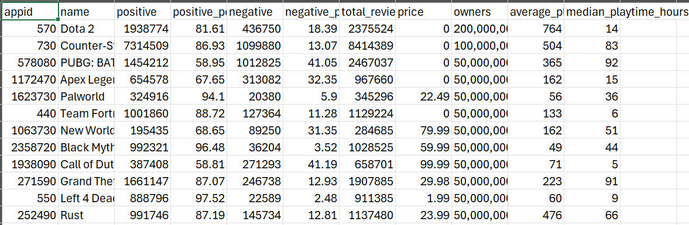

Top Steam Game Analysis
Overview
In this project, I will be doing an analysis of the top 100 Steam games since March 2009. I will giving a detailed report of the entire analysis process starting from data extraction, transformation, and loading, to visualization and analysis.
Goal
My goal is to grasp a better understanding of what makes these games top the Steam charts since 2009. I will explore these questions:
- What is the correlation between game price and average playtime?
- What is the correlation between number of positive reviews and average playtime?
- What is the correlation between number of positive and total reviews?
- What is the correlation between total reviews and average playtime?
- Do paid games have more positive reviews than free games?
- Are there more paid or free games in the top 100?
Dashboard
Extraction
I did research looking for data that was both meaningful and convenient to retrieve. I first searched on Kaggle looking at these two datasets:
- Dataset 1 data seemed to be a strong candidate as there were a lot of different fields to do analysis off of. However, upon further inspection of the data it looked to be incorrect and/or outdated. I decided to look at another dataset I had more confidence in.
- Dataset 2 also seemed promising but looking at the data, it was outdated about 5 years.
With no other publicly and readily available datasets to choose from, I decided I had to create my own. I looked at various websites that holds information about Steam's games. These included SteamDB, Steam's Official API, and Steam Spy.
- SteamDB is a third party website that collects data from Steam and allows you to view more in-depth information such as price changes and app ID. They also provide additional tools such as Steam charts, sales, and account calculator. This seemed like the best way to gather information as I planned on web scraping the info from this website. Unfortunately, web scraping was prohibited from the website, so I had to explore other options.
- Steam's Official API was another option I considered, grabbing information directly from the source. Using Steam's API, I grabbed a list of appIDs I would use to gather the information. By making a GET request using the respective appID: https://store.steampowered.com/api/appdetails?appids=550, I could gather a list of each games information and store it. This process seemed to be the best solution, but I came across an issue regarding API rate limiting. Steam only allows about 100,000 request a day and about 1 request every 10 seconds. Gathering the data of this list of games would take over a month to complete. Again, the information is there but not readily available for use.
- Steam Spy's API is a similar website to SteamDB where they track Steam game information. This website, however, has a publicly available API which has the all the correct information needed: price, average playtime, reviews, etc. I ended up using this API to extract my data from as it was up-to-date and accurate.
After deciding to go with Steam Spy's API, I moved on to transforming the data.
Transformation
I will be using Python with Pandas to extract and transform the data.
Here we only have to make a single request to the API endpoint which will get all the information necessary. Only needing to call once solves our rate limiting issue:
apiEndpoint = "https://steamspy.com/api.php?request=top100forever"
response = requests.get(apiEndpoint)
data = response.json()
This is an example of the data being sent by the API:
"730": {
"appid": 730,
"name": "Counter-Strike: Global Offensive",
"developer": "Valve",
"publisher": "Valve",
"score_rank": "",
"positive": 7325394,
"negative": 1102354,
"userscore": 0,
"owners": "100,000,000 .. 200,000,000",
"average_forever": 29986,
"average_2weeks": 904,
"median_forever": 6013,
"median_2weeks": 337,
"price": "0",
"initialprice": "0",
"discount": "0",
"ccu": 1595114
},
We proceed to extract the data from this request, only processing the necessary keys we want to do analysis on:
for appid, appInfo in data.items():
dataList.append({
"appid":appid,
"name":appInfo.get("name"),
"positive":appInfo.get("positive"),
"positive_percentage": round((appInfo.get("positive") / (appInfo.get("positive") + appInfo.get("negative")) * 100), 2),
"negative":appInfo.get("negative"),
"negative_percentage": round((appInfo.get("negative") / (appInfo.get("positive") + appInfo.get("negative")) * 100), 2),
"total_reviews": appInfo.get("positive") + appInfo.get("negative"),
"price":int(appInfo.get("price"))/100,
"owners":appInfo.get("owners"),
"average_playtime_hours": round((appInfo.get("average_forever") / 60), 0),
"median_playtime_hours": round((appInfo.get("median_forever") / 60), 0),
})
df = pd.DataFrame(dataList)
Loading
I used Pandas to load my data into both a .csv and a Microsoft SQL Server Database
engine = sqlalchemy.create_engine(f'mssql+pyodbc://{username}:{password}@{server}/{database}?driver=ODBC+Driver+17+for+SQL+Server')
df.to_csv('topgames.csv', index=False)
df.to_sql('game_data', con = engine, if_exists='replace', chunksize=1000)
Below is the loaded in data into topgames.csv:
Visualization
I used PowerBI to create my visualization reports. I used this as it has easy integration with MSSQL Server and CSV files. Loading in the data to PowerBI, I imported it from the MSSQL Server.
Analysis
In this section, I will be answering the questions asked above by providing data visualizations and explanations for this data.
What is the correlation between game price and average playtime?
Hello
What is the correlation between number of positive reviews and average playtime?
Hello
What is the correlation between number of positive and total reviews?
Hello
What is the correlation between total reviews and average playtime?
Hello
Do paid games have more positive reviews than free games?
Hello
Are there more paid or free games in the top 100?
Hello